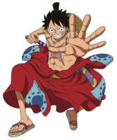
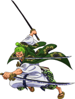
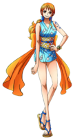
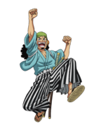
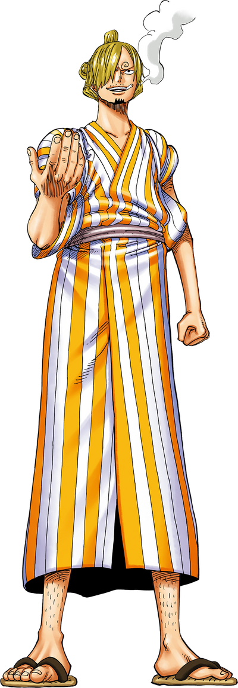
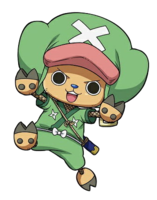
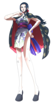
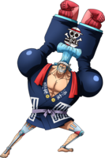
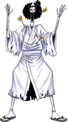
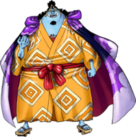

Les Personnages Principales de One Piece

Monkey.D.Luffy
Voici notre Capitaine Luffy ! il est pas très futé mais il a un cœur en or, c’est aussi un génie du combat. Il possède le fruit du Gomu-Gomu qui permet de devenir un homme élastique. Son rêve est de devenir le roi des pirates








